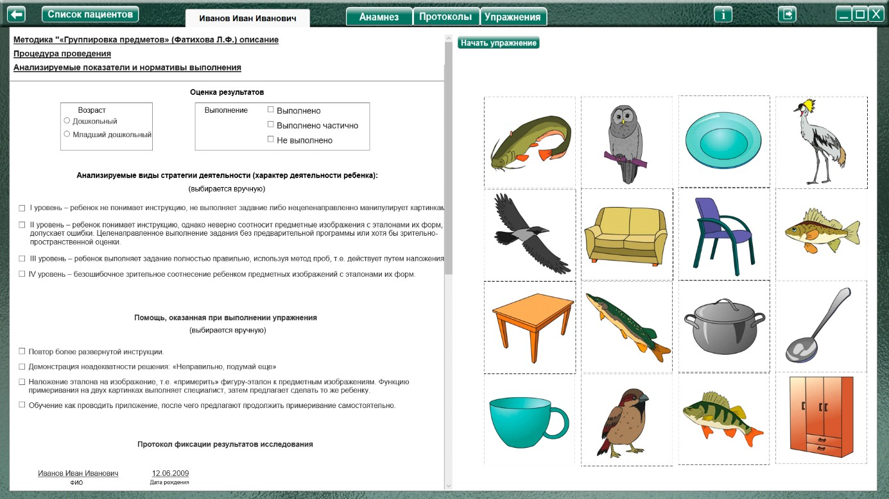
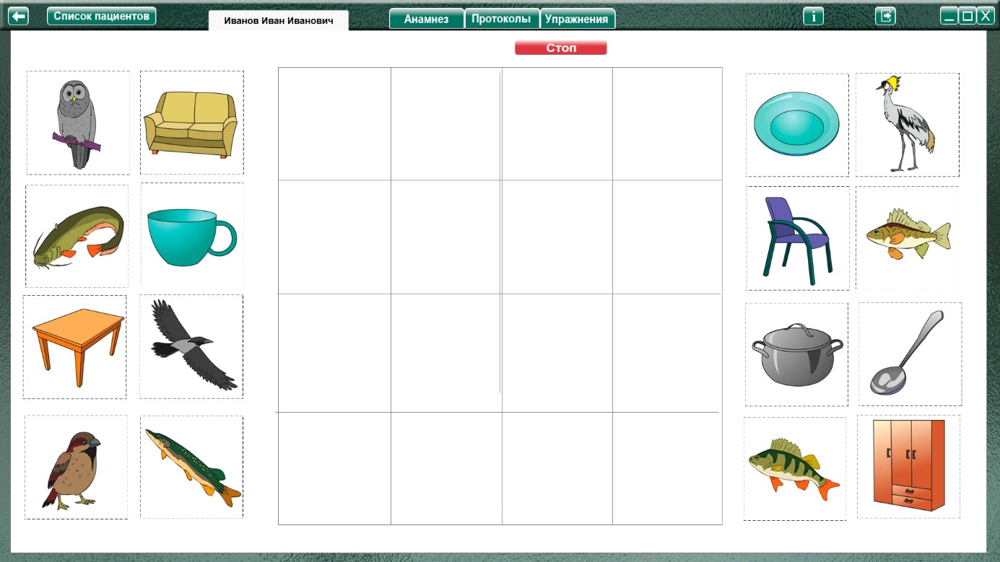
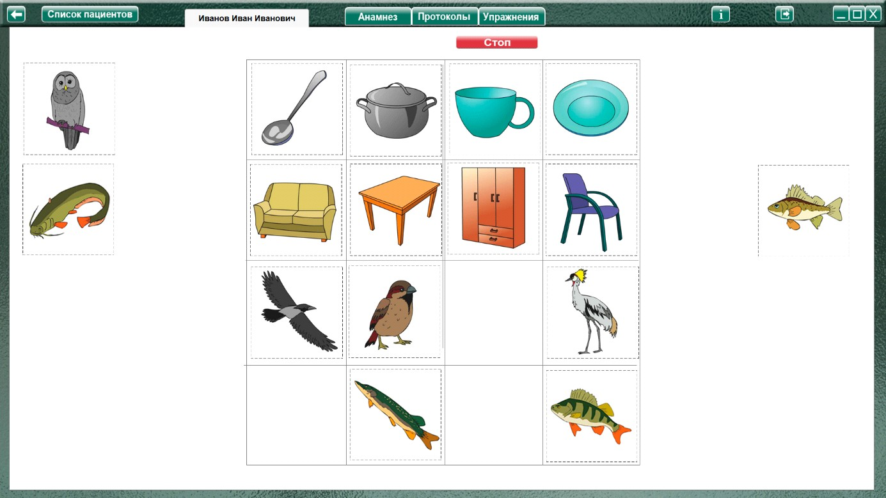

Методика «Группировка предметов» (Фатихова Л.Ф.)
Методика «Группировка предметов» (Фатихова Л.Ф.) описание
Процедура проведения.
Ребенку предлагают 16 карточек и дают следующую инструкцию: «Посмотри на эти карточки, разложи их в четыре ряда так, чтобы карточки подходили друг к другу, и их можно было назвать одним словом».
После выполнения первой части задания ребенку предлагается вторая: из четырех рядов сделать два, но так, чтобы в каждом картинки были про одно и то же, и их можно было назвать одним словом.
Выполняя задание, ребенок должен сначала сделать обобщение через родовое понятие второй, а затем третьей степени обобщенности. И в том и в другом случае он должен объяснить свои действия и ответы.
Анализируемые показатели и нормативы выполнения
За каждую часть задания, выполненную без ошибок и помощи, ребенку начисляется по 2 балла. Максимальная оценка за выполнение двух частей методики – 4 балла.
Виды помощи
Каждый вид помощи уменьшает оценку на 0,5 балла.
1. Экспериментатор указывает ребенку на неадекватность найденного решения: «Неправильно, подумай еще» (стимулирующая помощь).
2. Экспериментатор задает наводящие вопросы ребенку для выявления функциональных особенностей предметов, подлежащих классификации, например: «Что делает ворона? Покажи того, кто летает. Кто плавает? и т.п. (направляющая помощь). После этого ребенку снова предлагают сгруппировать предметы.
3. Экспериментатор сам начинает процесс классификации, сопровождая свои действия объяснениями. Затем предлагает ребенку продолжить работу по группировке (обучающая помощь).
Аналогичные виды помощи и в той же последовательности предлагаются при выполнении второй части задания. В случае нецелесообразности предъявления первый вид помощи опускается.
Анализ результатов
Группы детей |
Возраст |
Баллы |
Нормально развивающиеся дети |
Дошкольный |
3-4 |
Младший школьный |
3-4 |
|
Дети с задержкой психического развития |
Дошкольный |
1-3 |
Младший школьный |
2-3,5 |
|
Дети с умственной отсталостью |
Дошкольный |
0-2 |
Младший школьный |
0,5-2,5 |
Нормально развивающиеся дети как дошкольного, так и младшего школьного возраста, как правило, выполняют задание и первой и второй серии самостоятельно, подбирают к образованным
группам обобщающие слова. Часть детей данной группы может допускать ошибки при образовании групп, которые, однако, они сразу исправляют при предъявлении стимулирующей помощи.
Дети с ЗПР, начиная с дошкольного возраста способны классифицировать карточки на четыре группы в первой серии, однако затрудняются в назывании обобщающего слова или неправильно
называют его. Например, вместо слова «птицы» говорят «летают», вместо слова «посуда» – «из этого едят» и т.п. При неправильной группировке дошкольникам данной группы достаточно стимулирующей помощи, реже требуется направляющая помощь. Задание второй серии (укрупнение групп) оказывается для дошкольников менее доступным: они его выполняют, как правило, с большой дозой помощи, здесь необходима как направляющая, так и обучающая помощь, обобщающих слов (живое – неживое).
Дошкольники с ЗПР к образованным группам не подбирают.
Младшим школьникам с ЗПР для выполнения задания второй серии требуется стимулирующая или направляющая помощь, обобщающие слова часть из них может назвать, другая часть называет группы объектов, которые входят в укрупненную группу, например: «Здесь плавают и летают».
Дети с умственной отсталостью как дошкольного, так и младшего школьного возраста не всегда понимают инструкцию и, как правило, уже в первой серии нуждаются в обучающей помощи.
Задание второй серии оказывается для большинства дошкольников данной группы недоступным, а младшими школьниками решается в условиях предъявления обучающей помощи. Часть детей продолжает выполнять задание второй серии аналогично заданию первой серии, т.е. не может переключиться на новое основание группировки.
Оценка результатов
Характер деятельности ребенка:
Виды возможной помощи:
Стимулирующая помощь:
Направляющая помощь:
Обучающая помощь
Протокол фиксации результатов исследования
_________________________________ _______________
ФИО Дата рождения
Методика |
Группировка предметов |
||||
Автор методики (адаптации, модификации) |
Фатихова Л.Ф. |
||||
Цель: |
выявление способностей к классификации предметов |
||||
Дата / специалист |
|||||
Результат: баллы (макс.) / вывод об уровне развития |
|||||
Примечание |
|||||
Процесс выполнения диагностического задания |
|||||
| № | Характер деятельности ребенка |
Виды помощи |
Баллы |
|
1 |
||||
2 |
||||
Итоговая оценка |
||||

Логика заполнения протокола
Заполняется автоматически
Имя специалиста – логин при входе в программу.
Дата –дата и время прохождения упражнения в формате дд.мм.гггг.
Результат: баллы (макс.) / - кол-во баллов дублируется из ячейки «Итоговая оценка» (макс. 4).
«Характер деятельности ребенка», «Виды помощи» заполняются в зависимости от выбора специалистом соответствующих пунктов в разделе «Оценка результатов» либо самостоятельно.
Итоговая оценка – сумма баллов за все упражнения. Заполняется после формирования протокола по всем выполненным заданиям по нажатию кнопки «Подвести итог».
Остальные ячейки заполняются специалистом самостоятельно. При внесении не целого количества баллов, для разделения целого и десятичного значения использовать запятую. Например: 2,5.
Выполнение упражнения

Нажать кнопку «Начать упражнение» (включая секундомер, закрывая область оценки результата и открывая задание на весь экран).

Выполнить задание согласно пункту «Процедура проведения». В середине экрана имеется разметка, для формирования строк и столбцов согласно заданию. Картинки перетаскиваются в нужное место при помощи мыши с зажатой левой кнопкой.

По окончании задания специалист нажимает кнопку «Стоп», открывая поле для оценки результата по 1 заданию. При необходимости выбрать факт выполнения, характер деятельности, виды помощи, и нажать кнопку «Сформировать протокол». Произвести оценку результата (заполнить оставшиеся ячейки протокола) согласно пункту «Анализируемые показатели и нормативы выполнения».
Только после формирования протокола по выполненному заданию можно перейти к продолжению выполнения упражнения!
После формирования протокола нужно выбрать задание 2, нажать «Начать упражнение» и перейти ко второй части задания, в которой ребенку предлагается из четырех рядов сделать два, но так, чтобы в каждом картинки были про одно и то же, и их можно было назвать одним словом.
После формирования протокола по всем выполненным заданиям, нажать кнопку «Подвести итог» под протоколом, чтобы заполнить ячейку «Итоговая оценка».